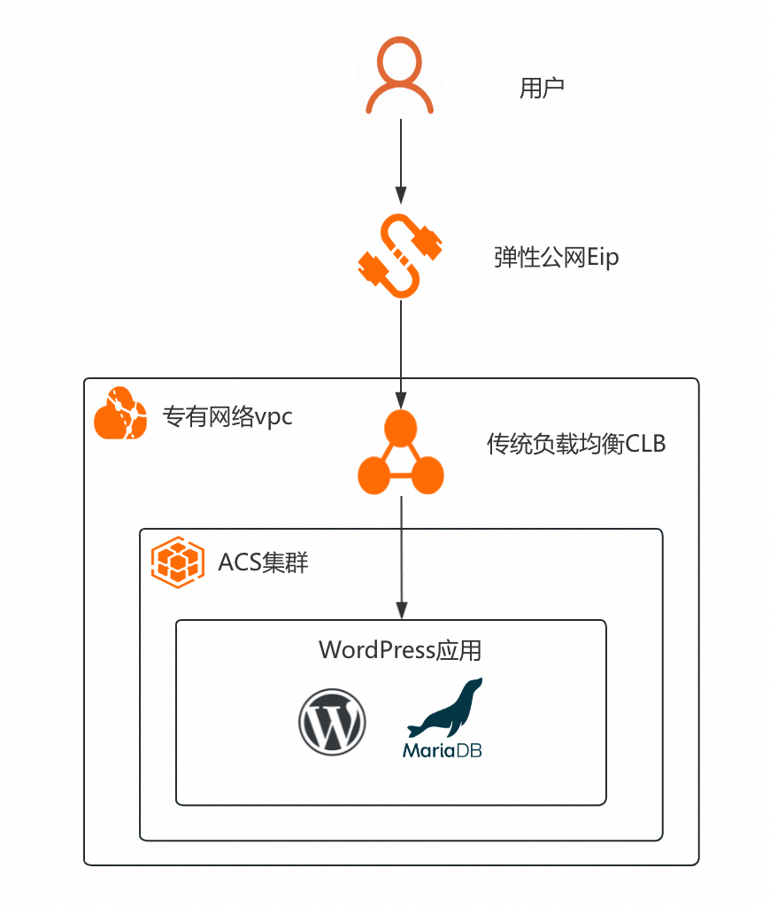
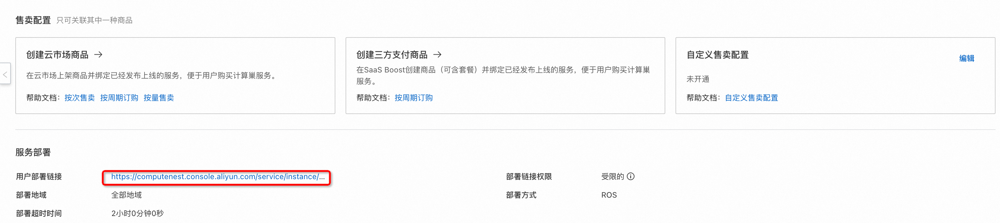
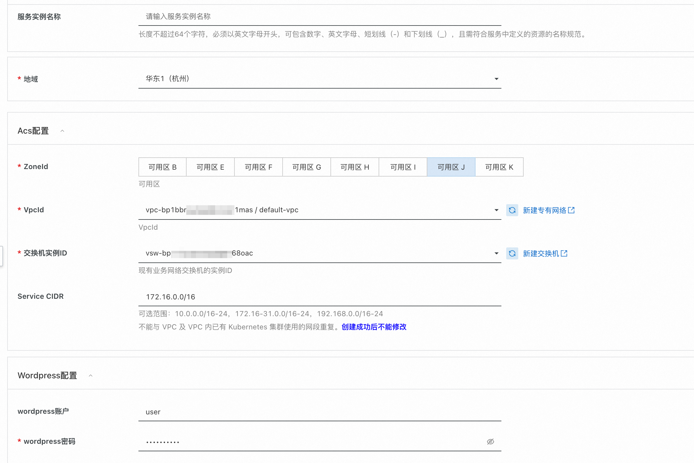
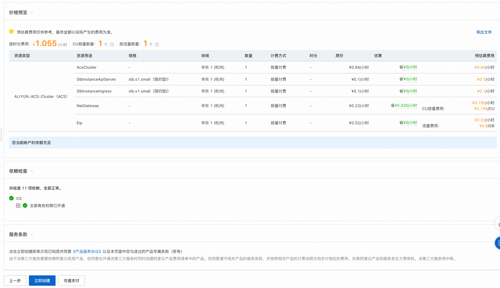
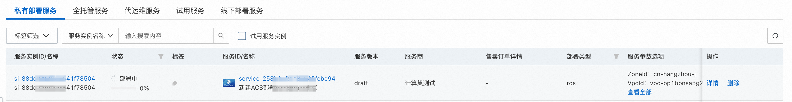
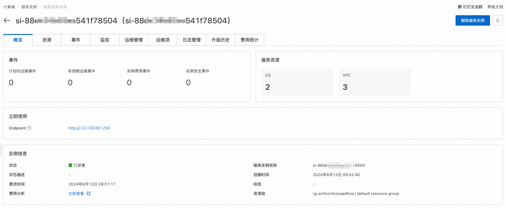
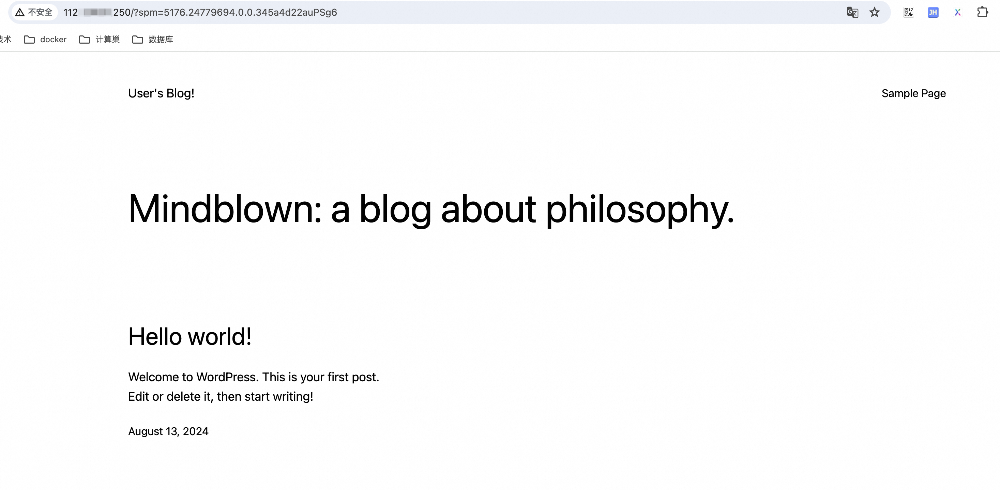
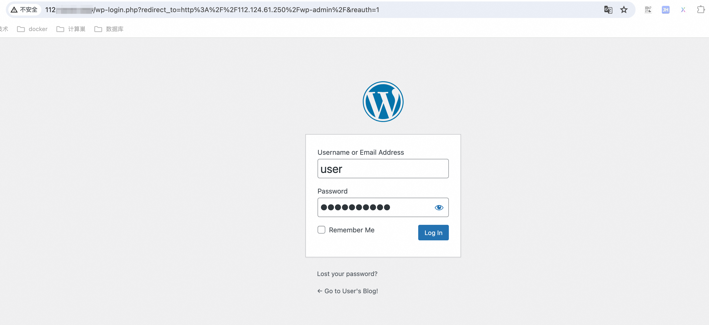

服务模板说明文档
服务说明
本文介绍wordpress服务acs+helm版快速上手流程，本示例对应的Git仓库地址：wordpress-acs-helm-demo。
本示例会自动的构建计算巢服务，具体的服务构建流程为:
- 将wordpress对应的helm chart压缩文件，上传到计算巢仓库中，生成计算巢helm部署物。
- 通过ros模版创建计算巢服务，计算巢服务需要关联helm部署物。
创建过程大约持续1分钟，当服务变成待提交后构建成功。
服务架构
本部署架构为acs集群部署，将helm chart文件通过WordpressComputenestHelmApplication资源部署到acs集群中，通过service绑定的loadBalancer的公网ip进行访问，这个loadbalancer的创建由ack集群自动完成, 在本例中，service提供的对外端口为80，和容器对外提供的端口相同。

服务构建计费说明
测试本服务构建无需任何费用，创建服务实例涉及的费用参考服务实例计费说明。
服务实例部署流程
部署步骤
- 部署链接：

- 单击部署链接，进入服务实例部署界面，根据界面提示，填写参数完成部署。

- 参数填写完成后可以看到对应询价明细，确认参数后点击下一步：确认订单。

- 确认订单完成后同意服务协议并点击立即创建，随后进入部署阶段。

- 等待部署完成后就可以开始使用服务，进入服务实例详情点击visitUrl。

- 访问visitUrl可以进入blog的首页，访问visitUrl/admin可以进入blog的后台管理页面：


服务详细说明
本文通过将部署wordpress服务需要的service、deployment等yaml文件打包成helm压缩包, 上传到计算巢仓库生成helm部署物，在模版中创建ACS集群，将helm部署物部署到ACS集群上。
模版文件
ros_templates/template.yaml主要由三部分组成:
1.Parameters定义需要用户填写的参数，包括可用区、Acs集群配置、wordpress配置等参数。 2.Resources定义需要开的资源，主要包括ACS集群和LoadBalancer资源。MODULE::ACS::ComputeNest::FluxOciHelmDeploy资源类型会将helm部署物部署到ACS集群中，其中{{ computenest::helmchart::wordpress }}是helm部署物占位符，会替换为对应的helm chart仓库地址。 3.Outputs定义需要最终在计算巢概览页中对用户展示的输出，展示wordpress的访问地址。